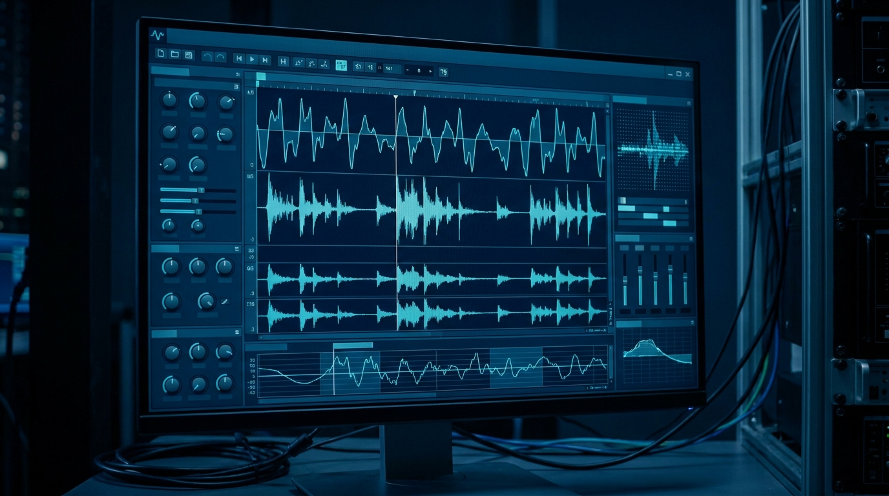
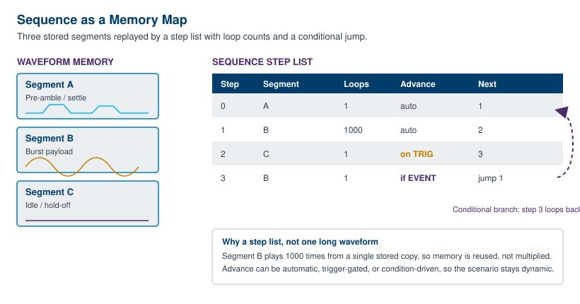
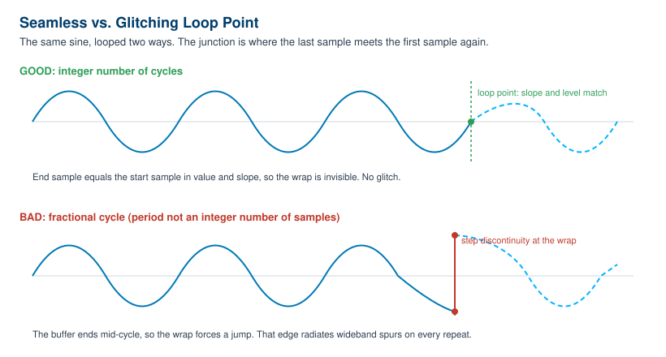

Chapter 5: Creating and Sequencing Waveforms

A function generator hands you a knob and a list of shapes. An arbitrary waveform generator hands you an empty buffer and asks what you want in it. That freedom is the whole point, and it is also where most of the work lives. The hardware will faithfully reproduce whatever sits in memory, glitches and all, so the quality of your output is decided well upstream of the front panel. This chapter is about that upstream work: where waveform data comes from, the software that shapes it, how to stitch segments into long dynamic scenarios without burning memory, and how to make a looped waveform repeat forever without a click at the seam.
None of this is exotic. It is mostly arithmetic and a little discipline. But it is the difference between a clean reference signal and a waveform that looks fine on screen and sprays spurs across your spectrum analyzer the moment it loops.
5.1 Three Ways to Build a Waveform
There are really only three sources for the samples that end up in waveform memory. Most projects use more than one of them, sometimes in the same waveform.
Standard library shapes. Every AWG ships with a catalog of parameterized primitives: sine, square, ramp, triangle, pulse, Gaussian, exponential, noise, DC. You pick the shape, set amplitude and timing, and the software fills the buffer for you. This is the fastest path and, for a surprising number of jobs, the only one you need. A clean sine at a known frequency, a pulse train with a defined duty cycle, a ramp for a sweep: the library covers the staples. The catch is that a library shape is only as good as the math behind it, which is why sample count and frequency still matter even when you never touch a single point by hand. We will come back to that in 5.4 and 5.5.
Point-by-point, equations, and formula entry. When the library does not have your shape, you describe it directly. Most waveform tools accept a mathematical expression, something like sin(2*pi*f*t) * exp(-t/tau), and evaluate it across the sample grid for you. Others let you draw freehand and then smooth the result, or type a table of points, or paste an array. This is how you build a damped ring, a chirp with a custom envelope, a glitch deliberately injected into an otherwise clean clock, or a stimulus that exists only in your test plan. Formula entry is powerful because it is exact and repeatable. You define the waveform once as a function of time, and the tool turns it into samples at whatever rate the instrument runs.
Imported captured or simulated data. The third source is data you did not generate inside the AWG software at all. A scope capture of a real signal you want to replay. A CSV table exported from a measurement. A vector computed in MATLAB, Python, or a SPICE simulation. This is the replay-the-real-world path, and it is what turns an AWG into a stimulus for closed-loop testing: capture a fault on a live system, bring it back to the bench, and replay it on demand a thousand times. The mechanics are simple, but two details bite people on import, so they deserve their own paragraph.
Sample rate and scaling on import. A file of numbers has no inherent time axis. The AWG plays your imported samples at its own sample clock, not at whatever rate the data was captured. If your scope sampled at 2 GSa/s and your AWG plays the file at 1.25 GSa/s, the replayed signal runs at the wrong speed and every frequency in it shifts. You either resample the data to the AWG's clock before import, or set the AWG's sample rate to match the source. The second trap is amplitude. Imported data usually arrives in physical units (volts, or raw ADC codes), and the AWG wants normalized values mapped onto its DAC range. Scale it so the largest excursion uses the full converter span without clipping. Leave headroom and you waste vertical resolution. Take none and you flat-top the peaks. Get the scaling right once, in software, and it is right forever.
Engineer's corner. The most common import bug is not a corrupt file. It is a column delimiter or a header row the parser did not expect, which silently shifts every value by one or turns your voltages into text. Plot the imported waveform inside the tool before you download it. Two seconds of looking saves an afternoon of chasing a phantom hardware fault.
| Build method | Best for | Watch out for |
|---|---|---|
| Library shape | Standard sines, pulses, ramps, noise. Fast setup. | Non-integer cycles in the buffer (see 5.5). |
| Equation / formula | Custom analytic shapes: chirps, damped rings, envelopes. | Aliasing if the math contains content above Nyquist. |
| Freehand / point table | One-off shapes, deliberate glitches, hand-tuned edges. | Discontinuities and unintended high-frequency content. |
| Imported capture / sim | Replaying real signals or simulation output. | Sample-rate mismatch and amplitude scaling on import. |
5.2 Waveform Creation Software
The buffer has to be built somewhere, and for anything past a library sine that somewhere is host software running on a PC. The instrument is the player. The software is the studio. A capable waveform editor gives you four things: a way to draw or compute shapes, a math layer to combine and transform them, file import for outside data, and a download path that moves the finished buffer into instrument memory over USB, LAN, or GPIB.
Drawing and editing. Good tools let you sketch a shape with the mouse, place control points, and then clean up the result with smoothing or interpolation. You can stretch a segment in time, scale it in amplitude, insert a flat hold, or splice two shapes together. The editor is where a rough idea becomes a defined sample sequence.
Math. Beyond drawing, the math layer is what makes the editor more than a paint program. Add two waveforms to model interference. Multiply a carrier by an envelope to shape a burst. Apply a window function to taper the ends. Filter a captured signal to remove noise you do not want to replay. These operations run on the full sample array before download, so the instrument never has to compute anything in real time.
Import and download. The same tool ingests CSV, scope-native formats, and numeric arrays, applies the resampling and scaling discussed in 5.1, and then writes the result into the AWG's waveform memory. Many tools also manage the named-waveform slots inside the instrument so you can store several shapes and recall them without re-downloading.
Berkeley Nucleonics ships WaveCrafter software with the Model 645 arbitrary/function generator for exactly this purpose: creating and importing waveforms and downloading them to the instrument. The 645 also exposes LAN web-browser remote control, so a connected unit can be driven from a browser without installing anything locally. The 645 stores up to five arbitrary waveforms, four in nonvolatile memory plus one volatile slot, which is the kind of named-slot management a host tool is built to handle. As always, confirm current software capabilities and instrument specifics against the datasheet at berkeleynucleonics.com before you design around them.
5.3 Sequencing and Looping
Suppose your test needs ten milliseconds of quiet, then a one-microsecond burst repeated a thousand times, then a long idle, then a jump back to the burst when an external trigger fires. You could compute every sample of that entire timeline and store it as one enormous waveform. You should not. The burst is the same microsecond a thousand times over, so storing a thousand copies of it wastes memory you do not have, and it freezes the scenario into one fixed playout that cannot react to anything.
Sequencing solves both problems. Instead of one giant waveform, you store a handful of short segments and a step list that tells the instrument how to play them: which segment, how many times to loop it, how to advance to the next step, and where to go after. The burst is stored once and looped a thousand times from a single copy. The quiet and the idle are short segments looped or held. The whole timeline becomes a compact playlist over reused building blocks.

Loop counts repeat a segment a set number of times without storing duplicates. Jumps let the step list move non-linearly, so step three can send playback back to step one. Conditional branches make that jump depend on something: an external trigger, a digital event line, or a flag. The instrument plays one path while a condition holds and a different path when it changes. Event-driven advance ties the step transition to a hardware signal, so a segment plays until a trigger arrives and only then moves on. Together these turn a static buffer into a small state machine that reacts to the world.
This is where high-end instruments separate themselves. The Berkeley Nucleonics Models 685 and 686 support advanced sequencing with loops, jumps, and conditional branches across their channels, which is what lets them drive long, dynamic, reactive scenarios from a finite memory rather than one monolithic waveform. The 685 carries up to 4 GSamples of memory per channel and the 686 up to 9 GSamples per channel, but even that much memory goes further when a sequencer reuses segments instead of storing every repetition. Verify the current sequencing feature set against the datasheet before committing a test design to it.
| Step | Segment | Loops | Advance | Next |
|---|---|---|---|---|
| 0 | A (preamble) | 1 | auto | 1 |
| 1 | B (burst) | 1000 | auto | 2 |
| 2 | C (idle) | 1 | on trigger | 3 |
| 3 | B (burst) | 1 | if event | jump to 1 |
Read that table as a program. Play the preamble once, fire the burst a thousand times, hold idle until a trigger arrives, then replay the burst and, while an event line stays asserted, loop back to step one. The same four segments cover a timeline that would take gigabytes to store flat.
5.4 Memory Management and Granularity
Waveform memory is not infinitely flexible about length. The hardware that streams samples to the DAC reads memory in blocks, often several samples per clock, so the length of a waveform usually has to be a multiple of some number N. That N is the granularity. There is also a minimum segment length, a floor below which a segment cannot go because the streaming engine needs a minimum run to keep its pipeline fed. Both numbers are instrument-specific and both shape how you build waveforms.
Length quantization. If granularity is, say, 16 samples, your waveform length must round to a multiple of 16. You cannot store a buffer of 1000 samples on such an instrument. You store 992 or 1008. This sounds like a triviality until you are trying to fit an exact signal period into the buffer, because the period you want and the nearest legal length rarely coincide on the first try. The fix is to choose your sample rate and period together so the period lands on a granularity boundary, rather than picking a period and hoping the length is legal.
Marker and data alignment. Many AWGs carry marker or digital output bits alongside the analog samples, one or more per sample, used to flag events for a scope trigger or to drive logic in the device under test. Those markers are quantized to the same granularity as the waveform data and are aligned to it sample for sample. If you need a marker edge at a precise instant, that instant has to fall on a sample, and the surrounding segment has to obey the same length rules. Plan markers as part of the waveform, not as an afterthought bolted on later.
Fitting a period to an integer number of samples. This is the central discipline of waveform construction and it leads straight into seamless looping. The number of samples in one period of your signal is the sample rate divided by the signal frequency. If that ratio is not a whole number, one period does not fit cleanly into an integer count of samples, and any buffer you build will contain a fractional cycle somewhere. The phase at the end of the buffer will not match the phase at the start. We treat the consequences of that mismatch next, because it is the single most common cause of a looped waveform that glitches.
Pro tip. Before you generate a single sample, compute samples-per-cycle as
sample_rate / frequencyand check whether a whole number of cycles also lands on the granularity multiple. If it does not, nudge the sample rate slightly. A tiny change in clock frequency is almost always more acceptable than a discontinuity that repeats on every loop.
5.5 Building Seamless Loops
A looping waveform plays its buffer end to end, then wraps instantly back to the first sample and plays it again. The output is continuous only if the last sample joins the first sample smoothly. If the value or the slope jumps at that junction, the output takes a step every time it wraps, and a step is a wideband event. It shows up as a click in audio, a glitch on a scope, and a forest of spurs across the spectrum, all locked to the loop rate. The waveform can look perfect on a single-shot view and still be broken the instant you loop it.

Choose an integer number of cycles. The reliable cure is to size the buffer so it holds a whole number of signal cycles. If the buffer contains exactly K complete cycles, the waveform is at the same phase at the end as at the start, so the wrap is seamless by construction. Combined with the granularity rule from 5.4, the goal is to find a buffer length that is both a multiple of N and an integer number of cycles. You get there by adjusting sample rate, cycle count, or buffer length together until all three constraints agree. This is a small constrained search, and most waveform tools will do it for you if you ask for "an integer number of cycles" rather than a fixed length.
When the math will not cooperate, window the ends. Some signals cannot be made to close perfectly, a captured transient or an aperiodic record, for instance. For those, taper the start and end of the buffer toward a common value with a window function so the junction, while not perfectly continuous in slope, no longer takes a hard step. Windowing trades a sharp glitch for a gentle, controlled transition, and for many measurements that trade is well worth making. It is a softer fix than integer cycles, not a substitute for it, so reach for integer cycles first and window only when you must.
Check the seam, do not assume it. Whatever method you use, verify it. Loop the waveform and look at the junction on a scope, or run the looped output into a spectrum analyzer and watch for the comb of loop-rate spurs that betrays a discontinuity. The seam either is clean or it is not, and two minutes of measurement settles the question that an hour of arguing about the math will not.
Get these five things right, where the samples come from, the software that shapes them, the sequence that reuses them, the granularity that constrains them, and the loop point that closes them, and the AWG does exactly what you asked. Get them wrong and the instrument will reproduce your mistake with perfect fidelity, on every single repeat.
Check Your Understanding
Five quick questions on this chapter. Your answers save on this device.